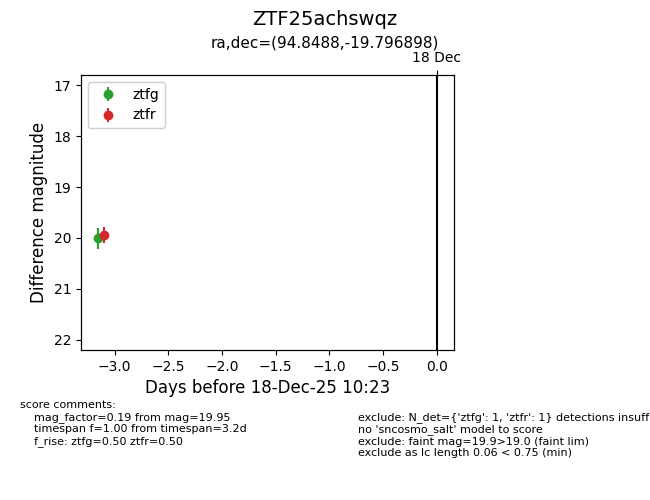
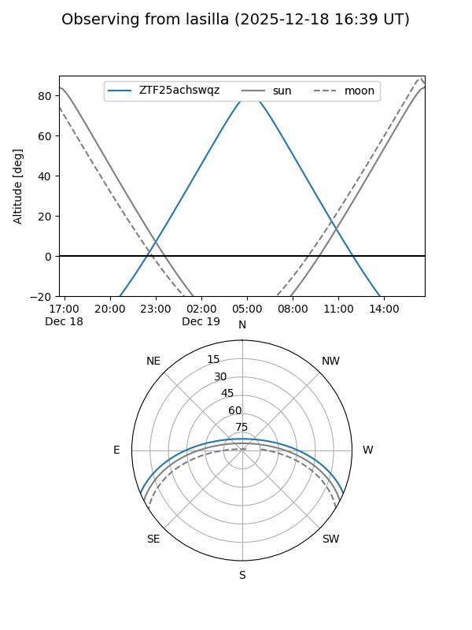
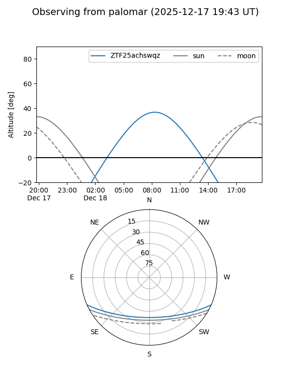

ZTF25achswqz
Target ZTF25achswqz at 2025-12-18 11:18
Aliases and brokers:
FINK: fink-portal.org/ZTF25achswqz
Lasair: lasair-ztf.lsst.ac.uk/objects/ZTF25achswqz
ALeRCE: alerce.online/object/ZTF25achswqz
alt names
ZTF25achswqz (ztf,fink_ztf)
Coordinates:
equatorial (ra, dec) = 94.8488,-19.79690
equatorial (HMS+DMS) = 06:19:23.70,-19:47:48.83
galactic (l, b) = (227.4711,-15.73169)
Photometry
last ztfg=20.01, ztfr=19.95
1 ztfg, 1 ztfr detections
Lightcurve

Visibility


Additional plots